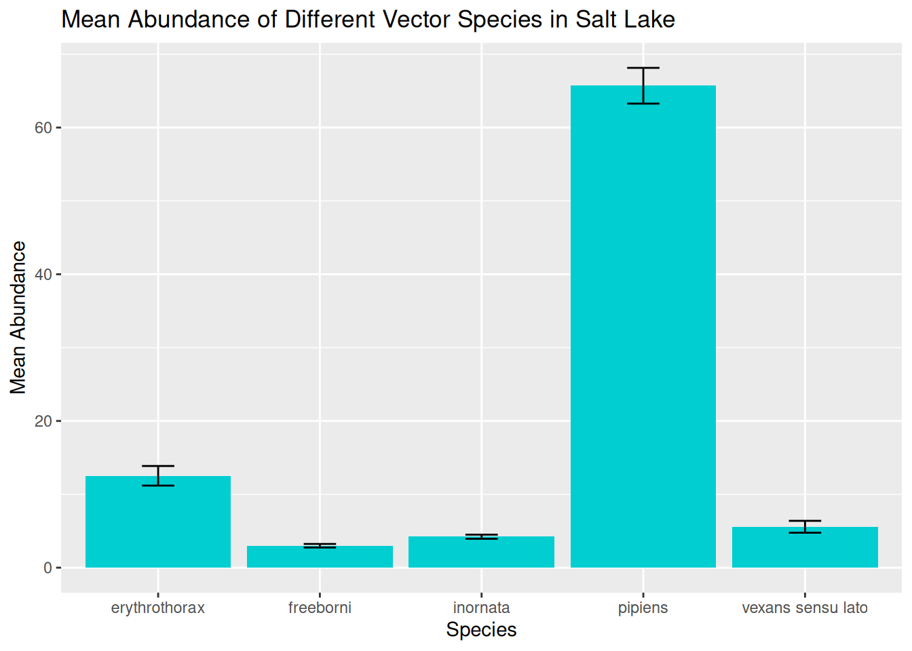
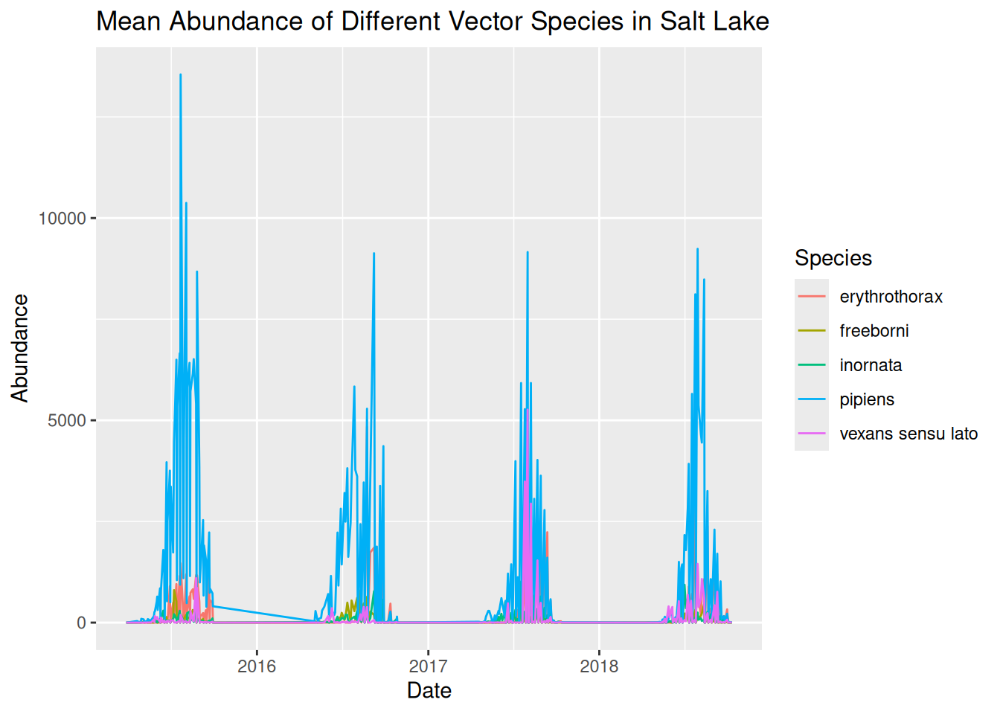
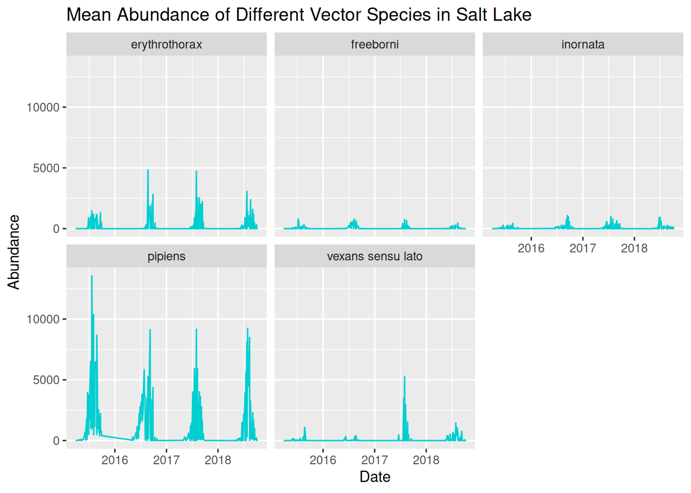
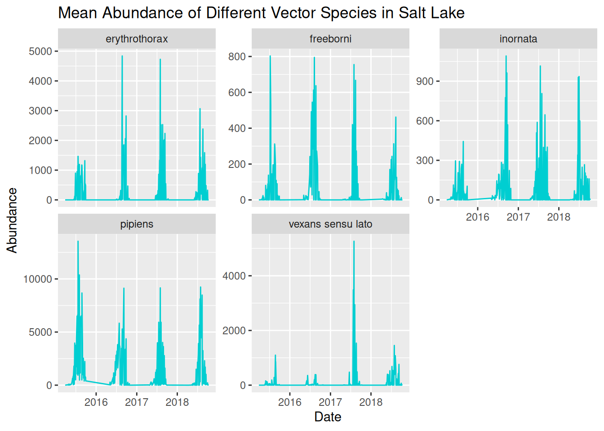

4 Challenge Task
4.1 Introduction
This Challenge Task provides an opportunity for you to independently apply the skills and concepts discussed throughout this online training, including:
- Selecting appropriate plot types.
- Clearly communicating patterns in the data.
- Considering the needs of different audiences.
- Applying effective visual design principles.
The Challenge Task has multiple levels and is designed to encourage applied thinking. Feel free to work through the levels that apply to you, but we encourage you to try all levels to make the most of the training.
During the Challenge Task, we encourage you to experiment with different approaches and discuss potential difficulties with each other via the VBD Hub Forum. Our demonstrators and I will be monitoring the Forum if you need any additional support.
After approximately 2 hours, a workbook version of this challenge will be made available. This is not an answer sheet, and we encourage you to continue coding yourself, rather than reading through the solutions. This workbook will walk you through the tasks like in the examples used throughout the training, but with a bit more independence before providing the answers.
4.2 Level 1
Open challenge_data.csv in RStudio.
Identify data types from the provided dataset.
Visualise abundance across the different species.
4.3 Level 2
Visualise abundance across the different species over time.
Identify any patterns in your data.
4.5 Level 4
Identify any visual or accessibility limitations across your visualisations and make appropiate edits.
4.6 Level 5
Consider how you would present your graphs as if you were presenting to:
- Academics
- Policy makers
- Public engagement
You may choose to write a draft script, present out loud to a colleague, or discuss with a fellow participant in the VBD Hub Forum.
4.7 Example Solutions
As we have discussed, there are often several approaches to visualising data, and therefore no single correct answer. Below are some example solutions to the Challenge Task, but the main aim of this section is to encourage applied thinking so you can further develop the skills from with training to use in your own research.
4.7.1 Level 1
When we look at challenge_data, we can see that we are looking at various vector species at Salt Lake over a number of years.
library("tidyverse")
challenge_data <- read_csv("data/challenge_data.csv")
#> Rows: 27285 Columns: 15
#> ── Column specification ────────────────────────────────────
#> Delimiter: ","
#> chr (8): genus, species, sample_unit, sample_sex, sampl...
#> dbl (3): sample_value, sample_lat_dd, sample_long_dd
#> lgl (2): value_transform, study_design
#> date (2): sample_start_date, sample_end_date
#>
#> ℹ Use `spec()` to retrieve the full column specification for this data.
#> ℹ Specify the column types or set `show_col_types = FALSE` to quiet this message.
challenge_data
#> # A tibble: 27,285 × 15
#> genus species sample_start_date sample_end_date
#> <chr> <chr> <date> <date>
#> 1 Aedes vexans sensu lato 2015-09-29 2015-09-29
#> 2 Aedes vexans sensu lato 2015-09-29 2015-09-29
#> 3 Aedes vexans sensu lato 2015-09-29 2015-09-29
#> 4 Aedes vexans sensu lato 2015-09-29 2015-09-29
#> 5 Aedes vexans sensu lato 2015-09-29 2015-09-29
#> 6 Aedes vexans sensu lato 2015-09-29 2015-09-29
#> 7 Aedes vexans sensu lato 2015-09-29 2015-09-29
#> 8 Aedes vexans sensu lato 2015-09-29 2015-09-29
#> 9 Aedes vexans sensu lato 2015-09-29 2015-09-29
#> 10 Aedes vexans sensu lato 2015-09-29 2015-09-29
#> # ℹ 27,275 more rows
#> # ℹ 11 more variables: sample_value <dbl>,
#> # sample_unit <chr>, value_transform <lgl>,
#> # sample_sex <chr>, sample_stage <chr>,
#> # sample_lat_dd <dbl>, sample_long_dd <dbl>,
#> # species_id_method <chr>, study_design <lgl>,
#> # sampling_method <chr>, location_description <chr>To begin visualising the data, we want to plot the abundance of each species. In the previous examples, we were grouping by sampling location, and we use very similar approaches when looking at multiple species. We can apply group_by() and summarise() like we did in the earlier example:
abundance_per_species <- challenge_data %>%
group_by(species) %>%
summarise(
mean_abundance = mean(sample_value, na.rm = TRUE),
se_abundance = sd(sample_value, na.rm = TRUE) / sqrt(sum(!is.na(sample_value)))
)We can start with an abundance bar plot with whiskers to assess variation in abundance across the different species, using our summarised data:
abundance_plot_species <- ggplot(abundance_per_species,
aes(x = species, y = mean_abundance)) +
geom_col(fill = "darkturquoise") +
geom_errorbar(aes(
ymin = mean_abundance - se_abundance,
ymax = mean_abundance + se_abundance
),
width = 0.2) +
labs(
title = "Mean Abundance of Different Vector Species in Salt Lake",
x = "Species",
y = "Mean Abundance"
)
abundance_plot_species
In this visualisation, we can see the spread of data across the different species and begin to identify preliminary trends.
However, as we have discussed, these visualisations will hide some of the variation in the data, particularly in terms of variation in abundance over time.
4.7.2 Level 2
We next want to plot the abundance of different vector species over time. Remember, before we can visualise a time series, we want to group the data by the date, and in this case the species as well:
daily_abundance_all_species <- challenge_data %>%
group_by(species, sample_start_date) %>%
summarise(total_abundance = sum(sample_value, na.rm = TRUE),
.groups = "keep")With the data grouped and summarised appropriately, we are ready to visualise abundance of different species over time. We have covered several approaches to this, and we will start with plotting one line for each species, and use line colour to differentiate between species:
daily_abundance_plot_species <- ggplot(
daily_abundance_all_species,
aes(x = sample_start_date, y = total_abundance, colour = species)
) +
geom_line() +
labs(
title = "Mean Abundance of Different Vector Species in Salt Lake",
x = "Date",
y = "Abundance",
colour = "Species"
)
daily_abundance_plot_species
When plotting multiple groups, in this case species, we have shown that visualisations can quickly become overcrowded, making them difficult to interpret. Although we have used line colour to differentiate between species, it is still tricky to see the trends in our data.
We can use faceting to separate our visualisation into separate panels for each species:
daily_abundance_plot_species_faceted <- ggplot(
daily_abundance_all_species,
aes(x = sample_start_date, y = total_abundance)
) +
geom_line(colour = "darkturquoise") +
facet_wrap(~ species) +
labs(
title = "Mean Abundance of Different Vector Species in Salt Lake",
x = "Date",
y = "Abundance"
)
daily_abundance_plot_species_faceted
We can now see the trends in abundance of each species much more clearly, but we can further refine this again by adjusting the y-axis scales for each panel:
daily_abundance_plot_species_faceted_y <- ggplot(
daily_abundance_all_species,
aes(x = sample_start_date, y = total_abundance)
) +
geom_line(colour = "darkturquoise") +
facet_wrap(~ species, scales = "free_y") +
labs(
title = "Mean Abundance of Different Vector Species in Salt Lake",
x = "Date",
y = "Abundance"
)
daily_abundance_plot_species_faceted_y
Now that we have a clear and readable visualisation, we can start to identify patterns in our dataset.
4.7.3 Level 3
Identifying patterns in our dataset allows us to formulate data-driven hypotheses. Reflect on the earlier prompts to consider potential hypotheses for this dataset:
- Patterns over time
- Differences between locations
- Unusual observations
- Alternative explanations for the same pattern
Remember, a hypothesis is a testable explanation for an observed pattern. We are not just asking questions about the patterns in our data, but how ecological context might be applied. For instance, if abundance peaks in the summer, we would want to consider warmer temperatures or increased humidity, and how this is relevant to VBD contexts, such as larval development.
4.7.4 Level 4
When designing visualisations, we want to make them visually appealing to improve interpretability and accessibility.
Common considerations for improving visual clarity including:
- Applying themes.
- Increasing font size.
- Avoid overcluttering.
- Use colour for emphasis and contrast.
- Ensure titles and labels are clear and informative.
- Apply accessible elements, such as accessible colour palettes, alternative visual cues, exporting as pdf, and alt-text.
Have you considered these in your Challenge Task visualisations?
4.7.5 Level 5
Whether you have chosen to present to academics, policymakers, or members of the public, it is useful to remember these prompts:
- The level of technical knowledge.
- How clearly the key findings are communicated.
- Any additional information needed to easily interpret the visualisation.
These principles apply whether you are designing a visualisation for a presentation, journal article, or poster.